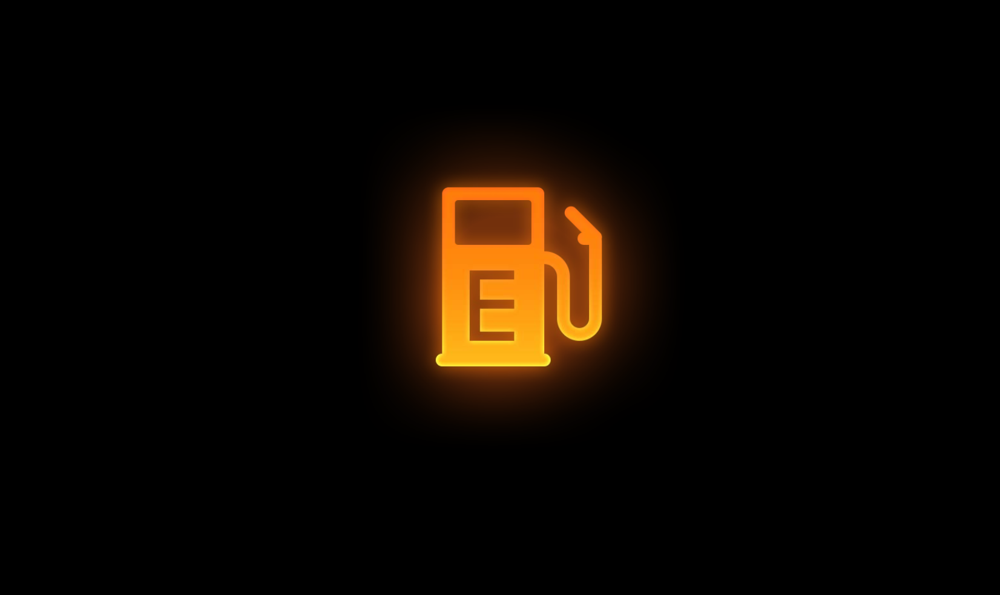
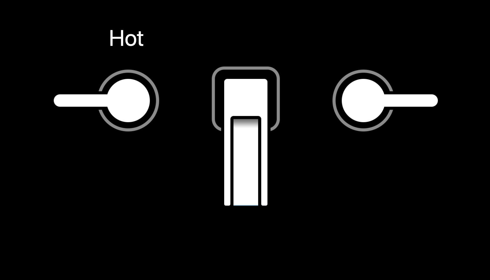
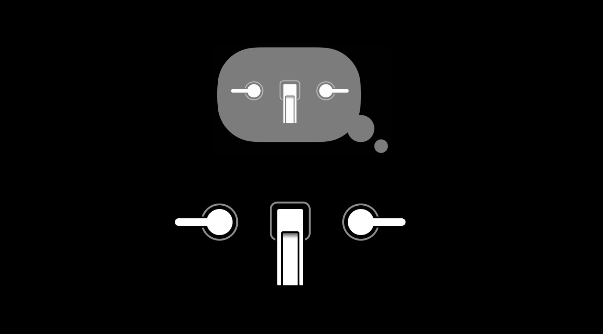

当我们谈论设计时，我们总是聚焦于设计的技术和过程。虽然这些考虑很重要，但是它们不会成就好的设计，至少它们本身不能。好的设计是在一个更基础、更人性的层级上由有关于设计是什么的更深的理解所指导。这就是设计原理所告诉我们的。它们会传达出我们如何感知到周围世界的核心事实，还有我们如何处理信息、我们如何做决定、我们如何交流。这些事实是永恒的、通用的。它们可以应用于各种图形设计、建筑设计、室内设计、零售店设计、风景设计、汽车设计等等。设计的原理不是告诉我们在设计中如何做出特定的事情，而是告诉我们为什么要做这些事情。这是好的设计建设的基础。
在 Apple 总是使用术语「human interface 人机交互」来描述其他人称之为「user interface 用户交互」的东西。人机交互这个说法并不普遍，没有被广泛使用，但它在 Apple 中有很长的历史。我们的设计指导文档被称为「HIG」，也就是「Human Interface Guidelines 人机交互规范」。这个文档可以追溯到 1978 年。
「用户」这个词语有一种冷冰冰的效果，它勉强定义了人和界面之间的关系。而「人类」这个词语更能凸显我们在为谁所设计。如果说我只是人类，那表明我会有不完美的地方，会有缺点，可能达不到你的期望。另一方面，「人类」这个词语也用来表达我们最好最高尚的品质。当你承认一个人的人性（humanity）时，你就在承认他们的善良、同情、慷慨、友好。
设计一个界面从根本上讲就是服务其他人。设计的目标不是做一个漂亮的 app 、一个有条理的 app、一个简单或者专注的 app。这些事情当然也十分重要，但它们不是真正的目标。真正的目标是为人服务或者说积极地影响使用你的 app 的人的生活。
真正重要的唯一一件事就是你的 app 怎样很好的满足你的目标用户的情感和实际需求。我们有保证安全和可预测未来的需求；我们有了解知识、理解含义的需求；我们有完成任务、实现我们的个人和专业目标的需求；我们也有体验美丽和快乐的需求。
设计绝佳的 app 应该提供这些东西，这样的 app 让用户更容易预测未来动作的结果，用户会感到稳定、坚固、值得信任；通过提供清晰有帮助的信息帮助用户做出见多识广的选择；它们流线化和简化了工作流，因此人们可以有效率的、有作用的完成他们的任务；它们也应该有审美上的快乐、享受、优美的体验。使用具备这些品质的 app 会让人感到愉悦、满意，你可以告诉人们是谁创造了完全考虑他们需求的 app，你会感知到为了让事情快速成功完成所付出的所有的时间和所有的努力。每一个事情都是有目的的，每一个事情都是可理解的，这会让人感觉到很人性。
这篇文章分享的一些设计原理可能是显而易见或者是很基础的。但大多数意义深远的东西都是最简单的。因为这些设计原理是通用的，所以我们可以看看它们是如何在现实世界构建我们的体验的，接下来会通过一个「去夏威夷旅行」的实际例子来讲讲这些设计原理。
目录
导向 Wayfinding

旅行的第一站是「机场」。在我们去机场的路上，会看到各种标识，告诉我们如何去机场的路、每一个航站楼的具体信息、去登机口的方向。、
当到达登机口时，我们会通过标识知道我们已经到达正确的位置。如果我们到达了错误的位置或者登机口变更，我们可以获得去往附近登机口的方向。为防止有紧急情况或者我们需要离开，标识会清晰地指出出口的位置。
这些引导我们的标识系统我们称之为「导向系统」。导向系统帮助人们在复杂的环境中快速成功地导航。这对让人们感到有方向感和安全十分重要。人们在机场很疲惫，他们有时差，他们在赶路，他们很紧张，所以机场需要仔细深入的考虑导向系统。好的导向系统提供了人们通常会去到的地方的一个全面易懂的列表，它们提供了在这些地方的需要的细节，它们是完全与情景相关的。当我们进入的系统越来越深，它们就会变得更加特定。它们通过清晰的告知人们的当前位置和相关其他位置帮助人们弄清方向，而且它们提供了一条清晰的退出的道路。知道你可以回到一个你熟悉的地方或者开始的地方是令人欣慰的。
导向通过回答一些基本的问题帮助我们感到安全：我在哪？我可以去哪？当我到那时可以找到什么？周围有什么？我如何出去？没有这些问题的答案，我们就会迷路。

你的 app 的界面也是一个巨大的古老的导向系统。导航栏、内容区域、标签栏，它们都是你 app 里提供导向的工具。导航栏标题和选中的标签栏条目让人们知道他们在哪儿，内容区域的标签栏让人们知道他们可以去哪儿、周围有什么，简单着色和可识别的标签栏图标、易懂的文字标签告诉人们当他们到那里时可以发现什么，后退按钮提供了一条退出路径，可以帮助人们识别他们进入的 app 区域。你的 app 的每一个屏幕都应该这些问题，否则用户就会迷路。
所以，彻底检查你的 app，每次到达一个屏幕，问问自己是否很好地回答了这些问题，每一个屏幕是否帮助人们知道他们在哪儿，每一个屏幕是否帮助提供选项给人们以告诉他们还可以去哪儿？如果有些屏幕不能清楚地回答这些问题，那就有一些工作需要做。
反馈 Feedback
到达目的地，我们要去租一辆车前往酒店。让人们以高速度驾驶两吨重的物体行驶在路上这件事有些滑稽，特别是当人们可能很疲惫或者要去不熟悉的地方时。现在，因为驾驶车辆的潜在危险，汽车制造商必须认真思考车辆的内部设计。安全是考虑的第一位。所以，对我们来说这是一个学习反馈设计原理的好方式。
反馈帮助我们有信心地、安全地操纵车辆，反馈帮助我们预料到可能让某些功能不能运转或者让车辆不能动的问题。对于汽车来说，它提供了许多种类型的反馈。
- 状态反馈：让我们知道车辆现在是怎样的；
- 完成反馈：让我们知道我们执行的动作是否成功完成或者失败了；
- 警告反馈：告诉我们潜在的问题；
- 错误反馈：告诉我们尝试的操作造成了错误。
为了我们的安全、其他乘客和行人的安全，汽车提供的反馈必须是清晰、及时、易懂的。具体来看下，车辆是如何与我们沟通的。
第一个来看状态反馈。当我们上了车准备走时，看看档位，它告诉我们处于停车状态。知道现在车辆处于哪个档位状态十分重要，重要到在档位和仪表盘上两个地方都有展示。仪表盘上的其他状态让我知道燃料状态，我可以在补充燃料前预估到可以走多远；让我知道当前的速度，帮助我避免拿到超速罚单。这对驾驶者来说是两个很重要的信息。
app 中的状态信息应该一样清楚。例如在「邮件」app 中，未读状态指示标记帮助人们知道该优先读哪些邮件；在「日历」app 中，状态指示标记帮助人们看到什么时间有人不能参加会议，以进一步帮助人们决定是否要调整会议时间；在「相机」app 中，红点、一点点增加的时间、录制按钮的状态三个元素可以让人们知道正在录制视频，它们都让人们知道珍贵但转瞬即逝的时刻正在被记录。清晰直接地展示状态对节约人们时间和帮助他们避免犯错非常重要。

第二个来看完成反馈。我们准备出发，所以我发动了汽车引擎。我们可以听到引擎发动的声音，可以感觉到发动机的震动，可以看到仪表盘上的数字活跃了起来，毫无疑问这表示我们可以出发了。当我从停车档位变换到行驶档位，我可以获得触觉反馈让我知道我已经变换了档位。当我驶离停车点时，我可以听到车门锁定的声音。这一切都是自动发生的，我们获得这些反馈非常重要，这些反馈是可靠的，是用汽车的方式告诉我们一切正常，一切如你所期待的那样发生，这让驾驶者更能专注于其他认知任务，如确定驶离停车点是否安全。

在 app 中的完成反馈有着同样的目的，例如锁定 iPhone 的声音，一个邮件被标记为未读时的动画或者邮件被删除时的动画，这些提示是谨慎的、没有攻击性的，但它们很难被忽视，它们告知我们设备如期望的所运行。
当然，确认反馈可以更加明显，Apple Pay 交易成功的动画和声音-触感就是一个例子，这很难被忽视。每一个在你 app 中的操作都应该提供某种形式的确认反馈，因为这让人们知道动作执行成功很有必要。

第三个来看警告反馈。警告可以帮助人们提前知道潜在的错误，比如低机油、低制动液、低燃油。警告可以通过状态指示标记、信息、仪表盘、内建显示器、声音或者以上所有来告知人们。这些警告很重要，它们让给我们保持安全，保护我们的车不受伤害。

最后一个来看错误反馈。在车上，错误反馈非常关键。如果你打算启动一辆没有燃料的车，你将会得到一条错误信息。
错误状态总是让人失望和沮丧，最好是在一开始就帮助人们避免犯错误。警告和确认反馈就对此有帮助。例如，检查表格内每行信息的有效性就是让人们知道哪些值是被接受的，哪些是不被接受的好方法。实时反馈可以帮助人们修正信息，在之后就不会遇到错误。
你也可以尝试猜测人们打算做什么或者犯错误时会做什么，并做出一些合理的事情。例如，在「Things 3」app 中，如果你在日期中输入 6 月 31 日这个不存在的日期，这对人们来说是一个常见的错误，这时 app 不会显示错误或警告，而是自动修正为日期 7 月 1 日。如此小的一个调整，但很聪明、很人性化。
正如你在前面所看到的，清晰、及时、易懂和提供信息的反馈很关键，反馈解答了极为重要的问题：我能做什么？刚刚发生了什么？现在正在发生什么？将来会发生什么？许多 app 在提供反馈上没有做的很好。
没做好的原因可能是在设计时，容易只想到固定的屏幕，而忘记随着时间不断前进、后退可交互的这种体验。好的反馈就像是与设计它的人进行对话。作为一个设计师，反馈就是你让 app 回答人们没有说出来的问题的方式，让人们知道他们该怎么做以及给他们提供有帮助的指导。所以，当你设计你的 app 时，想象你与使用 app 的人有一个对话。如果你在一个房间里跟他们对话你会说什么？你怎样说？一个简单但有效的方法是寻求没有用过你的 app 的人的建议，让他们告诉你他们在想什么，什么地方是不清楚的，他们认为什么东西是困惑的，接着向他们解释你的 app 是如何实际工作的。引导他们，向他们解释正在发生什么，他们应该注意什么。之后回过头来，考虑你说的和 app 表达的有何不同。当有人要向我解释他的 app 的设计，通常会比设计本身更清晰，人们对我说的东西填补了设计中忽视的部分。
可视性 Visibility
如果人们看不见，好的反馈也没用。可视性捕捉的是十分明显的东西，当控件和信息是清晰可见的时候，一个设计的可用性会被很好地改善。仔细思考下可视性在你的车里是多么重要。仪表盘在你面前直接的呈现了状态信息和警告指示标记，仪表盘看上去很乱，有很多文本、数字、移动的计量器、闪烁的灯和状态指示标记，但这对于操控一辆车来说都是有必要的，需要被一下子看见，而不必移动你的头和身体才能看到。隐藏一部分信息或者把一部分放到车的其他地方将会损失可用性。
关键的反馈会被忽视，app 也是同样的道理。在「邮件」app 中，小蓝点提供了有关于邮件消息的有帮助的状态信息，移除掉它可以减少杂乱、会更干净，但却极大地降低了可用性。人们必须要进入每条邮件消息才能获得那个信息，这是低效冗长的。所以，尽可能地让关键状态信息浮出水面很重要。
再来看下「时钟」app，如果把底部的「世界时钟、闹钟、就寝、秒表、计时器」隐藏到一个汉堡包菜单中，人们就要花更多的时间寻找 app 提供了什么其他功能。
当然，这里有一个平衡，界面过于密集会淹没人们，让人们特别是那些新用户做决定缓慢。所以可视性必须与其他元素进行权衡。
一致性 Consistency
一致性原则是关于用相似的方式表示相似的设计特性。如果你以前开过车，有些标识和术语你一定很熟悉。你会认出下面的标识是锁门、车窗、加油、机油、电池、前灯，你也会知道停车、驾驶、倒车这些词语在操控车辆时的意思。
一致性也应用于位置和控件的配置。我们都希望刹车在左边，油门在右边。一致性很好地改善了车辆的可用性，或者反过来说不一致会破坏可用性。所有的车都共享了一份普遍的针对于标识和术语的设计词典。所有的车的位置控制也都差不多，得益于一致性，当每次开一辆新车时不需要重新学习如何驾驶。
这是显而易见的，但一致性实际上很难实现。你必须有意识地保持一致性，你必须正确使用一致性，你要全面考虑当人们使用你的 app 时人们会有什么期待，这些期待可能大多数来源于他们使用其他 app 的经验。你可能不知道他们使用如何使用其他 app，但你可以做出一些有用的推测，也许他们使用其他和你 app 做的事情差不多的 app，很可能他们在一个平台上使用其他 app。所以你需要关注平台惯例，像是图形、术语、导航机制甚至是典型任务的普遍工作流。
下面用一个具象的例子来说明。在 iOS 上，这个用来表示动作概念的图形是一个从盒子里出来的向上的箭头，因为这个图形会普遍地与分享动作结合在一起，我们可以称之为「sharrow」。有些 app 使用了另一个不同的图形表示相似的概念，这个图形在网站和其他平台很普遍，这个图形没有任何问题，但是这不是 iOS 用户熟悉的图形。从你的目标用户的角度，最好与他们最熟悉的图形保持一致。
保持一致性会让你的 app 更方便使用。但有时我们总想做一点不一样的事情，当然那是好事情，你应该尝试新的想法，创新可能也会因此诞生。但像图标和文字标签这样简单的事情的不一致会让人们困惑。所以最好是保持一致，除非你有很坚定的理由。
关于一致性还有很重要的一点是内部一致性。内部一致性有关于设计相似样式的控件，你的 app 的图形应该有一个一致的视觉样式，你 app 中的文本应该只有几种字体、字号、颜色等等。内部一致性有助于使 app 具有内部凝聚力和整体性。当一切相互匹配，一切正好合适，人们就会对产品的完整性有更深的感受，我们会本能地认为这个设计是经过深思熟虑的，并且十分合理。保持一致需要自我控制和约束。
心智模型 Mental Model
到达酒店，你从不太透气的车上下来，进入房间走向浴室，打开水龙头的把手开关让水流出来。过了一会儿，你把手指放在水下面检查水温。水还有点凉，所以你让热水开大了一点。你又等了一会儿，水热了，你开始洗脸。
相比于一辆汽车，一个水龙头更加基础。但是在某些方面，你必须学习如何使用一个水龙头，你通过适应不同水龙头的控制开关和观察结果去学习。例如，你怎么知道哪个把手是控制热水的？因为你知道是大多数热水都由左边的把手控制。为什么你要等一会儿才去检查水温？因为你知道在调整水温和水变热之间会有延迟。单纯只看水的样子，你很难知道是冷是热，我们都有在水龙头下被烫伤的经历。现在当你每次使用水龙头时，你没有思考这么多事情，你从直觉上期待是那样。

在你的大脑中，有一个小小的可爱的水龙头模型，这个模型代表水龙头是含有不同部分和一系列功能和行为的系统，有一个喷口可以出水，有把手控制温度和流量。这些部分都有特定的配置，你的那个模型会有特定的行为，比如在调整热水和水温增加之间会有延迟。这个模型就是心智模型。你交互的每一个系统都有一个心智模型，这些心智模型十分简化，它们没有全面获取系统内部的运作。然而你使用这个系统的经验越多，你的模型就会变得越全面。
心智模型是根据个人经验建立的，并且基于不完整的事实，所以每个人的心智模型都是独一无二的。心智模型可以分为两个部分去理解。
一个是系统模型。系统模型是关于一个系统是如何工作的。对于水龙头的系统模型，它包括对两个独立的一热一冷的水源的思考。系统允许输入混合以创造一个温度范围。系统没有立即响应，改变温度可能要花一点时间，特别是刚打开水龙头时。系统模型包括对延迟和温度的理解。
另一个是交互模型。交互模型是关于如何与系统交互的。对于水龙头的交互模型就是我们用把手调整温度和水流量。
那这一切与我们的关系是怎样的？当像水龙头这样的系统匹配了我们的心智模型，我们对系统的期待就会被满足。事实发生时我们不会意识到我们的期望，我们对这个系统的认知是本能的。相反，当一个系统不符合我们的心智模型时，它就打破了我们的期待，我们就认为它不是本能的。

心智模型这个概念对于设计非常重要。在此用一个水龙头设计师的小故事来进一步说说这个设计原理。有一天水龙头设计师灵光一现，有个一个水龙头设计的新想法，不是用一个把手控制热水另一个把手控制冷水，而是用一个把手控制温度另一个控制水流量，这样当人们想调整水流量的时候就不会不小心改变温度了。现在，对于水龙头设计师，有了一个新的心智模型。但对于其他人来说，他们的心智模型与设计师的不匹配。当人们使用设计师的水龙头时，不能满足人们的期待，人们会认为是不直观的。更糟糕的是，新的水龙头的外观跟以前的太像了，但是实际行为却完全不一样。当人们以为打开了热水时，却没有水出来。期待的行为和体验到的事实间形成的落差造成了主要的可用性问题。
也许对把手样式进行改变可以表示它有了新的交互模型，或者添加一个文字说明，但这还是有问题。文字说明和微小的变化是很容易被忽视的设计线索，特别是人们对于一个系统的运作和如何操作它已经有了根深蒂固的认知时。这也是设计中的一个大问题，尝试让人们改变 app 如何运作的心智模型是很冒险的，人们越熟悉越严重，对已长期使用的产品做出改变都会让人感觉难以适应，不管这些改变有多么好多么必要。当考虑对已有 app 要做出改变时，你必须有 100% 的把握这些改变让应用的使用者用着更舒服。为了改变而改变不是一个好的理由。仔细地测试你的设计，在怀疑之下证明你的创新更好。如果你做到了，那就可以推动，人们最终会被吸引。
继续阅读
出发机场，坐上飞机，到达夏威夷，向酒店开去，到达酒店好好休息，旅程还没有结束，继续阅读核心设计原理的下半部分……
参考链接
如果你觉得这篇文章对你有所帮助，欢迎请我喝杯咖啡，感谢你的支持😁